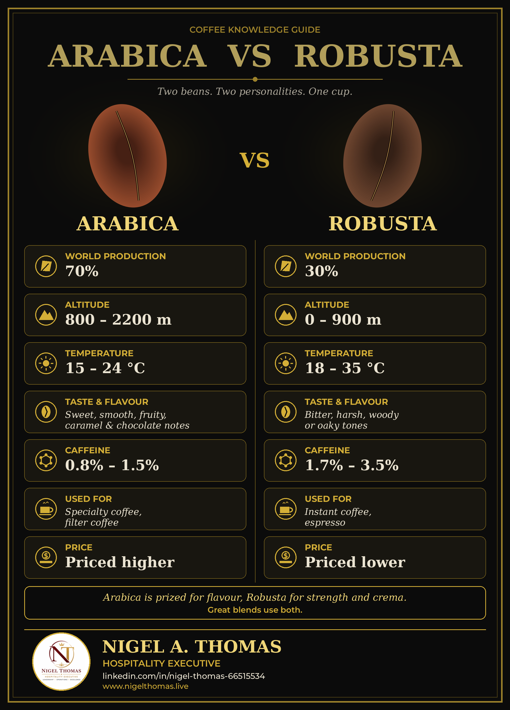

Arabica vs Robusta: The Complete Coffee Bean Guide
Walk into any café, hotel breakfast room or restaurant kitchen and you will find coffee on the menu. Very few guests, and surprisingly few staff, can say which bean is in the cup. Yet the choice between Arabica and Robusta decides the flavour, the aroma, the crema, the caffeine hit and, just as importantly, the cost per cup. After more than thirty years in hotels, resorts, cruise ships and F&B operations, I have seen both beans used brilliantly and badly. This guide explains the two species in plain language and shows how to choose between them.
Arabica vs Robusta at a Glance
| Feature | Arabica | Robusta |
|---|---|---|
| World production | About 70% | About 30% |
| Altitude | 800 – 2200 m | 0 – 900 m |
| Temperature | 15 – 24 °C | 18 – 35 °C |
| Taste & flavour | Sweet, smooth, fruity, caramel and chocolate notes | Bitter, harsh, woody or oaky tones |
| Caffeine | 0.8% – 1.5% | 1.7% – 3.5% |
| Used for | Specialty coffee, filter coffee | Instant coffee, espresso |
| Price | Priced higher | Priced lower |
Two Species, One Family
Arabica (Coffea arabica) and Robusta (Coffea canephora) are two different species of the same plant genus. They are not simply two grades of one bean. Each has its own genetics, its own growing needs and its own chemistry, which is why the cup tastes so different.
Arabica is the older cultivated species, associated with the highlands of Ethiopia and later with Yemen, from where coffee spread across the world. Robusta comes from the lowland forests of Central and West Africa and was widely planted in the twentieth century because it survives conditions in which Arabica struggles. Today Arabica supplies roughly seven of every ten cups produced globally, and Robusta supplies most of the rest.
A practical way to remember it: Arabica is the delicate specialist that needs cool air, altitude and care; Robusta is the tough all-rounder that tolerates heat, humidity and pests. Everything else, from price to flavour, follows from that difference.
Where and How They Grow
Altitude
Arabica is grown at 800 to 2200 metres. At height the cherries ripen slowly, which lets sugars and aromatic compounds develop. Slow ripening is one reason high-grown Arabica often shows fruit, floral and caramel notes. Robusta grows from sea level up to about 900 metres, in warm plains and lower slopes where Arabica would suffer.
Temperature
Arabica prefers a mild 15 to 24 °C. Frost damages it and sustained heat stresses it. Robusta is comfortable between 18 and 35 °C, which is why it dominates hot, humid regions. As climate patterns shift, many Arabica farms are moving to higher ground, and Robusta is gaining importance because it copes better with rising temperatures.
Hardiness and yield
Robusta is more resistant to leaf rust and many insects, partly because of its higher caffeine and chlorogenic acid content, which act as natural defences. It also yields more per plant. Arabica is more vulnerable to disease and gives lower yields, which adds to its cost. The farmer’s risk is higher, so the price must be higher too.
Taste and Flavour
Arabica is known for a sweet, smooth, fruity cup with caramel and chocolate notes. Depending on origin you may also find citrus, berry, stone fruit, nuts or floral aromas. Acidity is brighter and cleaner, and the finish is softer.
Robusta tastes bitter, harsh and woody, sometimes described as oaky, earthy or rubbery. Body is heavier and the aftertaste lingers. Poor-quality Robusta can taste burnt or like grain, which gave the species an unfair reputation. Well-grown, carefully processed Robusta, sometimes called fine Robusta, can be rich, nutty and chocolatey, with a heavy body that works beautifully in the right blend.
Why the difference? Arabica contains more sugars and lipids, while Robusta contains more chlorogenic acids, which break down during roasting into bitter-tasting compounds. Higher caffeine also adds bitterness on its own.
Caffeine: The Real Numbers
Arabica typically contains 0.8% to 1.5% caffeine by weight. Robusta contains 1.7% to 3.5%, roughly double. That is why a Robusta-rich espresso feels stronger and why many energy-minded blends include it.
Two cautions for service teams. First, caffeine in the cup depends on dose, grind, brew time and ratio, not only on the bean. A large filter coffee can contain more total caffeine than a small espresso. Second, guests who are sensitive to caffeine, pregnant or advised by a doctor to limit it should be offered decaf or a clearly labelled lower-caffeine option. Always know what is in your blend.
Used For: Espresso, Filter and Instant
Filter and specialty coffee
Filter methods such as pour-over, drip and the South Indian metal filter highlight clarity and nuance. Arabica is the natural choice, because delicate flavours survive and bitterness stays low. Specialty-grade coffee, scored 80 points or higher by trained tasters, is almost entirely Arabica.
Espresso
Espresso is where Robusta earns respect. A modest percentage adds body, a thick and persistent crema, and a punchy bitterness that cuts through milk in cappuccinos and lattes. Many traditional Italian blends use 10% to 30% Robusta, and some go higher. A pure Arabica espresso can taste sweeter and more acidic but may produce thinner crema.
Instant coffee
Instant and soluble coffee relies heavily on Robusta, because it gives high extraction yield, strong flavour after processing and a lower raw-material cost. This is the main reason Robusta carries a downmarket image, although the cost advantage is simply good business for large-volume products.
Price and the Economics of the Cup
Arabica is priced higher and Robusta lower. Both are traded as commodities, and the gap moves with harvests, weather and currency, but Arabica almost always costs more per kilogram. For a hotel or café this matters in three ways.
- Cost per cup: A shot of espresso uses roughly 18 grams of coffee. A blend that swaps part of the Arabica for quality Robusta lowers the raw cost without necessarily lowering guest satisfaction, provided the blend is well roasted.
- Positioning: A single-origin Arabica pour-over justifies a premium menu price. A milk-based espresso drink, where flavour is diluted, rarely needs the most expensive beans.
- Consistency: Blends protect you from price swings and crop variation, so your coffee tastes the same in March and in October.
As I tell F&B teams: cost control is not about buying the cheapest product, it is about matching the product to the purpose. Spend on Arabica where guests will taste it, and save where they will not.
Roasting and Freshness
Roast level changes everything. Light roasts preserve origin character and acidity, which suits Arabica. Dark roasts bring bitterness, smoke and body, and can hide defects. Robusta often needs a medium to medium-dark roast to tame its harshness. Whatever the bean, freshness decides quality.
- Buy whole beans and grind just before brewing.
- Store in an airtight, opaque container away from heat, light, moisture and strong odours.
- Use beans within four to six weeks of the roast date for best flavour.
- Rotate stock first in, first out, and label every container with the roast date.
Brewing Tips for Each Bean
For Arabica: use water just off the boil, around 92 to 96 °C. Keep the ratio near 1:15 to 1:17 for filter. A medium grind and a three to four minute brew time works for pour-over. Avoid over-extraction, which turns sweetness sour or bitter.
For Robusta-containing blends: for espresso, aim for about 18 to 20 grams in, 36 to 40 grams out, in 25 to 30 seconds at roughly 9 bar. If the shot tastes harsh, grind slightly coarser or shorten the time. Milk drinks suit Robusta blends well because milk softens bitterness and rounds the body.
For South Indian filter coffee, a blend of Arabica and Robusta, often with a little chicory, is traditional. The decoction is strong, and hot milk and sugar balance it. This is a perfect example of the two species working together.
India’s Place in the Story
India grows both species. Arabica is cultivated in the shaded hills of Karnataka, Tamil Nadu, Kerala and the Araku Valley, with Chikmagalur, Coorg and the Baba Budan Giri hills best known. Robusta thrives in the lower, warmer areas, especially in Karnataka’s Kodagu region and in Kerala’s Wayanad. Many Indian coffees are shade-grown under a canopy of native trees, grown alongside pepper, cardamom and areca, which adds to their character. Indian Robusta is respected internationally for its clean body and is widely used in espresso blends.
For hospitality professionals in India this is good news. Quality local beans are available at fair prices, and guests increasingly enjoy hearing the story of the estate behind their cup.
Building a Coffee Menu
When I advise hotels and restaurants on coffee programmes, I suggest a simple structure that matches bean to drink.
| Menu item | Suggested bean | Reason |
|---|---|---|
| Single-origin pour-over | 100% Arabica | Showcases flavour and justifies premium pricing |
| Espresso and Americano | Arabica-led blend with some Robusta | Crema, body and balance |
| Cappuccino, latte, flat white | Medium-dark blend | Cuts through milk |
| Filter coffee (South Indian) | Arabica-Robusta blend, optional chicory | Traditional strength and aroma |
| Cold brew and iced coffee | Arabica or blend | Smooth, low acidity |
| Breakfast buffet urn coffee | Cost-effective blend | Volume and consistency |
Train every barista and server on what the house blend contains, where it comes from and how it tastes. A guest who asks “Is this Arabica?” should get a confident answer, not a shrug.
Processing: How the Cherry Becomes the Bean
Coffee beans are the seeds of a fruit called the coffee cherry. How the seed is separated from the fruit shapes flavour as much as species does. Three methods dominate.
- Washed (wet) process: the fruit is removed with water before drying. The result is a clean, bright, consistent cup. Most high-grown Arabica is washed.
- Natural (dry) process: whole cherries dry in the sun, so the seed absorbs fruit sugars. Expect heavier body, sweetness and berry-like notes. Much Indian Robusta and some Arabica is processed this way.
- Honey (pulped natural) process: the skin is removed but some sticky fruit flesh stays on during drying, giving a balance between clean and fruity.
Indian growers also produce “Monsooned Malabar”, a coffee exposed to humid monsoon winds that swells the bean and gives a mellow, low-acid, earthy cup. It is a reminder that tradition, climate and craft all matter.
Grading and Quality
Green coffee is graded by bean size, density, defects and moisture. Larger, denser beans from higher altitudes usually fetch higher prices. Defects such as black beans, insect damage or mould lower quality quickly, and one bad bean can taint a cup. Reputable suppliers sort by size, colour and density, and many use hand-picking to remove faults. When you purchase for a hotel, ask for the grade, the harvest year, the processing method and a recent cupping score. A supplier who cannot answer is a warning sign.
Robusta also has quality tiers. Ordinary commodity Robusta is harvested in bulk and may include unripe cherries, while fine Robusta is selectively picked, carefully processed and sold at a premium. Treat them as two separate products.
Blending: The Art Behind the House Coffee
A blend is built to a purpose. A roaster may combine a high-grown Arabica for aroma and acidity, a lower-grown Arabica for sweetness and body, and a measured amount of Robusta for crema and punch. Typical starting points include:
| Blend style | Approximate ratio | Character |
|---|---|---|
| Specialty espresso | 100% Arabica | Sweet, acidic, fruity, thinner crema |
| Classic espresso | 80% Arabica, 20% Robusta | Balanced, good crema, chocolate notes |
| Strong traditional espresso | 60% Arabica, 40% Robusta | Bold, heavy body, bitter edge |
| South Indian filter | 70–80% Arabica, 20–30% Robusta, optional chicory | Strong, aromatic, suits milk |
These ratios are guides, not rules. Taste, adjust and record every change so your result is repeatable.
Sustainability and the Future of Both Beans
Climate change is the biggest question facing coffee. Studies suggest that land suitable for Arabica could shrink significantly in coming decades as temperatures rise and rainfall patterns change. Farmers respond by planting at higher altitudes, using shade trees, developing resistant varieties and improving water management. Robusta’s heat tolerance makes it more resilient, so expect its share and its quality reputation to grow.
As a buyer you have influence. Ask about fair pay for growers, shade-grown practices, traceability and certifications. Ethical sourcing is no longer a niche issue; many guests, especially younger ones, choose venues that care. A short line on the menu describing the estate and the farmers costs nothing and adds real value.
Service Standards for Coffee in Hotels and Restaurants
Great beans can still be ruined at the point of service. Over the years I have found that coffee quality is mostly a discipline problem, solved with simple standard operating procedures.
- Clean equipment daily. Backflush espresso machines, clean steam wands after every use and descale on schedule. Old coffee oils turn bitter and spoil fresh coffee.
- Calibrate the grinder every morning. Weigh a shot, time it and taste it. Adjust the grind as humidity and bean age change.
- Use filtered water. Coffee is about 98% water, and poor water ruins the flavour and damages machines.
- Serve hot but not scorched. Warm the cups. Brewed coffee should be served at about 65 to 70 °C, and milk steamed to about 60 to 65 °C.
- Never hold brewed coffee for long. Filter coffee left on a hot plate turns bitter within thirty to sixty minutes. Brew in smaller batches or use insulated carafes.
- Know the allergens and the milk options. Offer plant-based milks and keep the steaming jugs separate where required.
Train staff to describe the coffee in a sentence: the bean, the origin and the flavour. “Our house espresso is an Indian Arabica-Robusta blend with notes of dark chocolate and roasted nuts” sells more drinks than silence does.
Health and Responsible Service
Coffee in moderation is generally considered safe for most healthy adults, and many people enjoy its antioxidants. Still, caffeine affects sleep, heart rate and anxiety in some people. Offer decaf, low-caffeine and caffeine-free alternatives, and never push strong coffee on guests who say they are sensitive. Because Robusta can contain about twice the caffeine of Arabica, a blend’s composition matters to those guests. Hospitality means looking after guests as well as pleasing them.
Common Myths
- “Arabica is always better.” Not always. A fresh, well-made Robusta blend beats a stale, badly roasted Arabica. Quality depends on growing, processing, roasting and brewing.
- “Robusta is only for cheap coffee.” Fine Robusta is increasingly valued, and espresso culture depends on it.
- “Dark roast means more caffeine.” Roast level has little effect on caffeine. Species and brew method matter far more.
- “100% Arabica on the label means specialty.” It only names the species. Grade, freshness and roast are separate questions.
How to Taste the Difference Yourself
The best training exercise costs very little. Brew one Arabica and one Robusta in the same way, with the same dose, water and time. Smell the grounds, then the brewed coffee. Sip while it is hot, then again as it cools, and note sweetness, acidity, bitterness, body and aftertaste. Write your impressions and compare them with the table above. Run this “cupping” with your team monthly, and standards will rise quickly.
Frequently Asked Questions
Which has more caffeine, Arabica or Robusta? Robusta, at 1.7% to 3.5% against 0.8% to 1.5% for Arabica.
Which is better for espresso? A blend. Arabica brings sweetness and aroma, Robusta adds crema and body.
Why is Arabica more expensive? It grows at higher altitude, yields less, is more vulnerable to disease and takes more care to farm.
Can I use Robusta for filter coffee? You can, but the cup will be bitter and heavy. Arabica or an Arabica-led blend is better.
Which is healthier? Both contain antioxidants. Differences are small. Moderation, not species, matters most.
Final Thoughts
Arabica and Robusta are partners, not rivals. Arabica offers elegance, sweetness and complexity. Robusta offers strength, crema, resilience and value. Understanding where each belongs lets you design better menus, control costs, train staff with confidence and serve guests a cup that matches their expectations. Whether you run a hotel breakfast service, a resort café or a bar programme, start with the bean, because the cup begins there.
Free Coffee Infographic
Download the Arabica vs Robusta infographic for your training room, café wall or team briefing.
